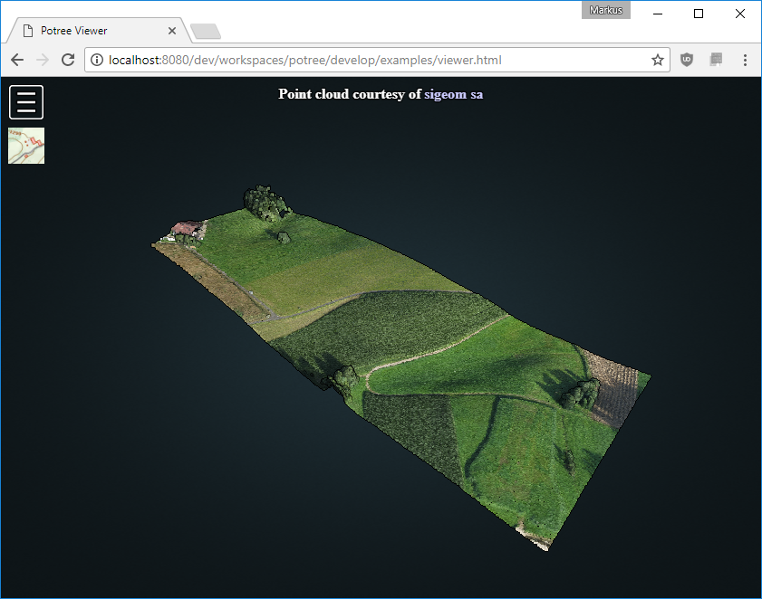

Download PotreeConverter
Setup a Web-Server
Due to strict security policies in browsers,
it is not possible to open potree html files directly
on your pc because potree needs permission to load files.
You have to put all necessary source files and the pointcloud on
a webserver to view the result.
You can, however, install a local webserver on your pc.
I use XAMPP, which contains Apache Webserver as well as PHP and MySQL
but Apache alone should work fine:
After you've installed and started Apache/XAMPP, you can access files in your htdocs directory through a localhost URL:
Assuming your htdocs directory is C:\xampp\htdocs, you can access it in your browser with http://localhost
Converting & Generating a Web Page
Try this for your first point cloud and then take a look at the PotreeConverter page to learn more about the converter options:
./PotreeConverter.exe C:/pointcloud.las -o C:/xampp/htdocs/potree --generate-page pageName
You should now be able to open the generated potree page at this URL: http://localhost/potree/examples/pageName.html
